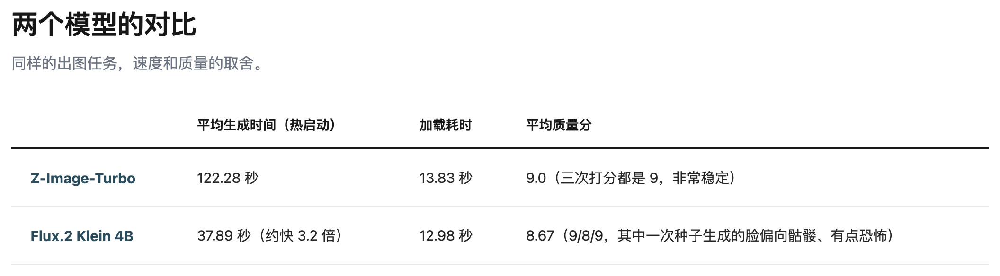
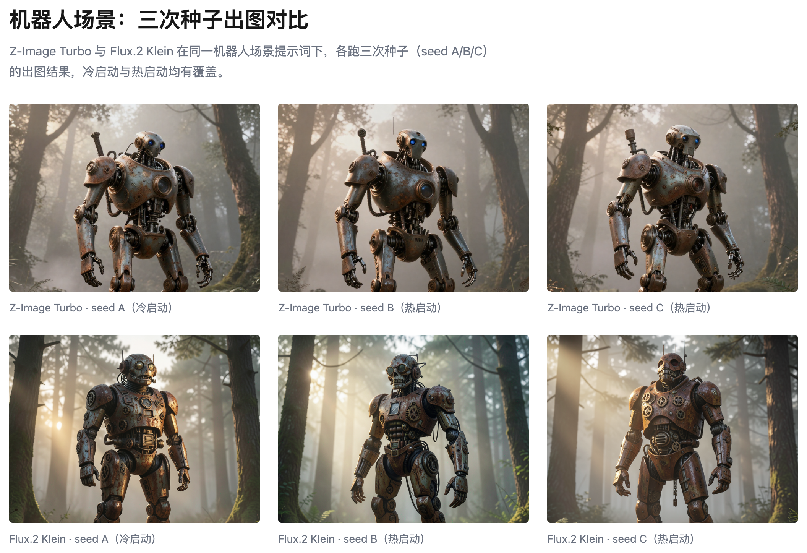
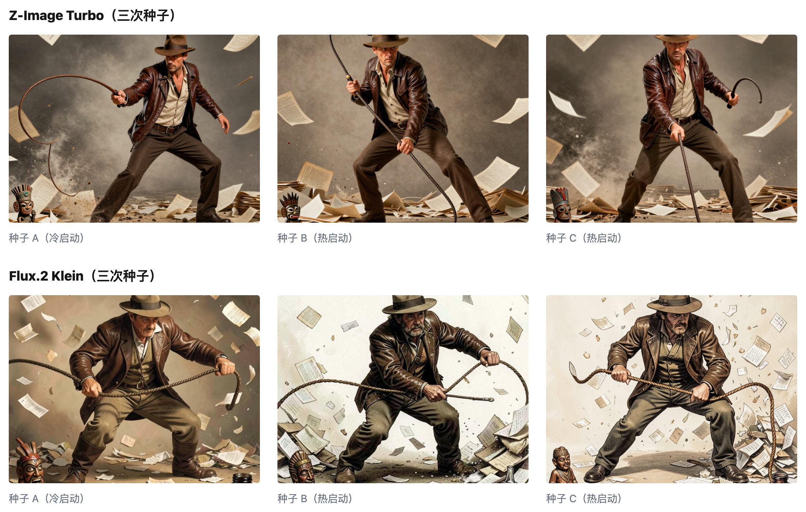
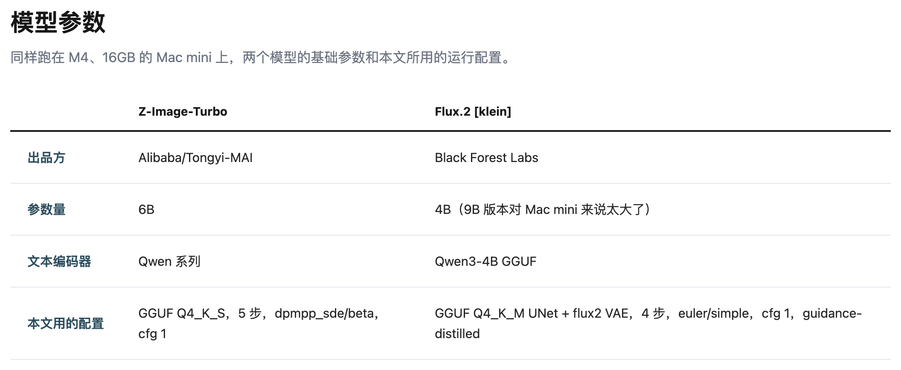

上一篇Mac mini 生图模型测试写了我测试过多个模型， 这次我把目光集中到胜出的两个模型上，选出我的主力模型。
我的选择是：主力模型 Z Image Turbo ，辅助模型 Flux.2 Klein。

Flux 要比 Z Image 快三倍 ，而且质量就差一点点。 大家直觉上会先选 Flux，但我选的是 Z Image，因为我更看重质量。
有人会说，Flux 用同样的时间可以生成三个，再选一张最好的，也可以啊。
这话是没错。 比如在机器人的场景下可以。

但在人物动作场景（一个手持鞭子甩动的动作瞬间）, Z Image 的理解力更好。 这种情况从 0.03 的分数差上看不出来 ，但看效果图就很明显了：

从人物的样貌，到动作表达，Z Image 都更好。 当然它们对鞭子的处理都很弱，但这点和模型关系不大 ，可以忽略。
如果你和我用一样的 Mac Mini （M4，16GB）那么下面的参数你会感兴趣：

以上。